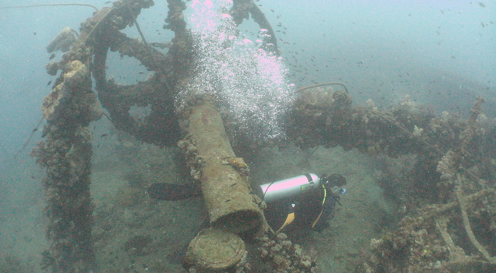

Professional
Dive Master
The SDI Divemaster Course is the first professional level certification. During the course you will learn how to work with divers, lead certified divers, and act as a dive guide showing divers underwater dive sites and the marine life that inhabits those dives sites. You will increase your knowledge about physics and physiology as well as increase your proficiency with your scuba and snorkeling skills.
Course prerequisites:
- Minimum age 18
- Certified SDI Advanced Diver or equivalent; advanced certification must include verifiable experience in deep, navigation, night, and limited visibility specialties
- Certified SDI Rescue Diver or equivalent
- Provide proof of current CPR, first aid and oxygen provider(where local law permits)*
- Provided proof of at least 40 logged dives (see 3.11 for number of dives/hours required for graduation)
What you can expect to learn:
- SDI standards and procedures
- History of SDI
- Code of ethics and professionalism of an SDI Divemaster
- Products and proceduresHow to place an order
- Yearly renewals
- Risk management
- Waivers and releases
- Filling out an accident report
- Equipment
- Physics and physiology of diving
- Medical problems related to diving
- Use of dive computers and tables
- Diving environment
- Dive planning and dive management control
- Problem solving
- Underwater and surface communications
- Diver assistance
- Avoiding out of air and emergency situations
- Recommended safe diving practices
- Boat diving procedures
- Shore/beach diving procedures
- Night diving procedures
- Accident management
- Emergency procedures
- Planning group dives
- Divemaster check lists and logs
Some of the required skills you will have to demonstrate include:
- In water, transport another diver in full scuba equipment at a quick pace for 4 minutes
- Demonstrate a complete rescue scenario satisfactorily
- Perform underwater skills with and without a mask
- Swim on the surface, in full scuba equipment, using the snorkel, 100 metres
- Preparation and planning
- Briefing and debriefing
- Group control
- Problem recognition and solving
- Diving equipment assembly and disassembly
- Equipment inspection
- Entries/exits
- Proper weighting and buoyancy control
- Snorkel and regulator clearing
- Regulator recovery
- Controlled descents and ascents
- Underwater swimming
- Mask clearing
- Buddy system techniques
- Weight system removal and replacement
- Out-of-air emergency alternatives
- Equipment care and maintenance
What can i do as a SDI Dive Master:
- Assist an active SDI Instructor during approved diving courses provided the activities are similar to the graduate’s prior training
- Supervise and conduct dives for certified divers, provided the activities are similar to the graduate’s prior experience and training
SDI Divemaster Diver minimum requirements:
- Satisfactorily complete the SDI Divemaster written examination, or online version with a minimum score of 80 percent and 100 percent remediation
- Complete all water requirements
- Demonstrate to an active SDI Instructor the ability to solve in-water and out-of-water diver problems
- Demonstrate mature and sound judgment concerning dive planning and execution
- Operate as a Divemaster in a wide variety of environments